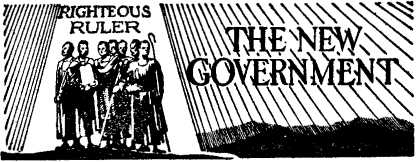
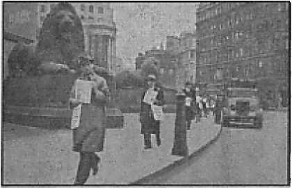
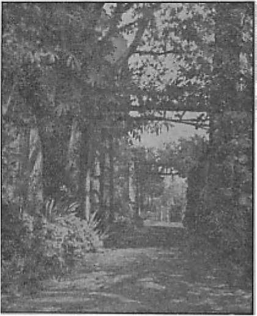

Encroachments on Protestants and Masons
The labor snag ami the time of reaping
Some of the new truths in this book
Five Cents a Copy One Dollar a Year
Vol. XXIV No.W« • $1.» In Canada and
Published Every Other Wedneeday
November 25, 1M2 • Foreign Countries
Contents
The Hierarchy vs. Government by the People 3
‘Patroness of the United States’
The New Government
Brings Suit for $20,000 Damages
“Thy Word Is Truth”
Germany’s War Machine Sows and Reaps (3)
Presenting “This Gospel of the Kingdom”
Different Methods of Arrangement
British Comment
Published every other Wednesday by
WATCHTOWER BIBLE AND TRACT SOCIETY, INC., 117 Adams St., Brooklyn, N. Y.( U. S. A.
Editor Clayton J. Woodworth
Business Manager Nathan H. Knorr
Five Cents a Copy
$1 a year in the United States $1.25 to Canada and all other countries
NOTICE TO SUBSCRIBERS
Remittances: For your own safety, remit by postal or express money order. When coin or currency is lost in the ordinary mails, there is no redress. Remittances from countries other than those named below may be made to the Brooklyn office, but only by International postal money order.
Receipt of a new or renewal subscription will be acknowledged only when requested. Notice of Expiration is sent with the journal one month before subscription expires. Please renew promptly to avoid loss of copies. Send change of address direct to ns rather than to the post office. Your request should reach us at least two weeks before the date of issue with which it is to take effect. Send your old as well as the new address. Copies will not be forwarded by the post office to your new address unless extra postage is provided by you.
Published also in Greek, Portuguese, Spanish, and Ukrainian.
OFFICES FOR OTHER COUNTRIES
England 34 Craven Terrace, London, W.2
Australia 7 Beresford Road, Strathfield, N.S.W. South Africa 623 Boston House, Cape Town
Mexico Calzada de Melchor Ocampo 71, Mexico, D.F. Brazil Caixa Postal 1319, Rio de Janeiro
Argentina Calle Honduras 5646-48, Buenos Aires Entered as second-class matter at Brooklyn, N. Y.» under the Act of March 3, 1879.
Proposed Abolition of Interest
♦ In a broadcast from Simla, Sir Mahomed Zafrullah Khan, law member with the government of India, proposed the abolition of the system of interestbearing loans as a desirable feature of any “new order” and listed it first in his own proposals for such an order. The Holy Scriptures forbid the taking of interest. In the text, Psalm 15:5, translated “He that putteth not out his money to usury” in the Authorized Version, the correct translation is “that putteth not out his money for interest”; and that is the way the passage is rendered in Leeser’s version.
The Wealth of India
♦ India is the primary source of the world’s supply of jute; it has the largest high-grade iron-ore deposits in the world; it is second on the list of suppliers of oil seeds; it produces one-third of the world’s supplies of manganese, and three-fourths of its sheet and block mica; it has one-third of the world’s total cattle population, and, atop of that, has 26,000,000 goats, 22,000,000 sheep, and 14,000,000 horses. It is the world’s No. 1 producer of sugar, and is the source of immense production of wheat, rice, and gasoline.
Japan Now Has the Rubber and Tin
♦ America has been riding around in automobiles and eating out of tin cans, and, now that Japan has both the rubber and the tin, it is, to say the least, slightly embarrassing. There is still some connection between Japan and the Allies; for the Japanese found a way to tell the Australian people that if they wanted their men fed they had better send along the food, and not enough only for the prisoners of war but for the civilians as well. So they will probably find a way to sell rubber and tin to the Allies in a way of their own making.
“And in His name shall the nations hope.”—Matthew 12:21, A.R.V.
Volume XXIV Brooklyn. N. Y., Wednesday, November 25, 1942 Number 605
The Hierarchy vs. Government by the People
Catholic church has always re-
-t fused to admit that sovereignty resides in and is expressed through the will of the people, and has always dismissed as deadly errors the liberties without which true democracy cannot exist.” So says Chas. Guignebert in A Short History of the French People. (English translation by F. G. Richmond, Vol. II, p. 580)
Pope Gregory XVI, in his encyclical Mirari vos, condemned liberty of conscience as a “most pestilential error” and as an “absurd and erroneous doctrine, or rather raving”. In the same encyclical he condemned separation of church and state.
When, therefore, the bishops, in their letter to President Roosevelt, referred to their “tradition of devoted attachment to the ideals and institutions of the government”, their statement must be taken with several grains of salt.
Statements by Catholic dignitaries are, moreover, subject to qualification and interpretation by themselves when the force of events makes it clear that the obvious meaning does not fit in with the current objectives of the Hierarchy. It is rather difficult for them, however, to explain away the all too numerous evidences of sympathy with totalitarianism and lack of enthusiasm for democracy that continually come to the fore.
In this connection a statement by a lecturer of some note, Gerhart Seger, in the New Leader of November 22,1941, is pertinent. He says:
The general attitude of Catholic clergymen as well as laymen is, unfortunately, overwhelmingly anti-Ally. If the reader will pardon my referring to my own experience in going about the country lecturing, I would like to point out a strange fact. During the seven years in which I have had the pleasure of being in the United States I have delivered exactly 1,584 public lectures for democracy and against Nazism. I have-been invited by practically every conceivable kind of organization. My sponsors range all the way from striking CIO automobile workers to local branches of the National Manufacturers Association. My lecturing activity involves contacts with all sorts of organizations and committees. I have addressed Negro colleges, and I spoke at the annual dinner of the chamber of commerce of Newport, Rhode Island.
There is no Protestant denomination where I have not spoken, from the swankiest Episcopal church in the most fashionable residential districts of large cities to the poorest Negro Baptist church in Alabama. I have been invited by the most orthodox Jewish synagogues as well as by the Freethinkers of America. But, of those 1,584 invitations to speak, only once, one single time, was I invited to address a Catholic women’s club, in Hollywood. This is no accident—the conclusion is obvious.
Shortly before the attack on Pearl Harbor American priests were polled with the question as to whether they favored the United States’ engaging in a shooting war outside the Western Hemisphere. Of the nearly 35,000 priests, 91.5 percent stated that they were opposed to it. They were also polled as to whether they favored the United States’ aiding Russia, and 90.5 percent stated that they were opposed to that. In that connection the force of the remark by John LaFarge in the Jesuit magazine America of September 20,1941, is seen:
It will be a serious matter if America’s twenty million Catholics, not to speak of many others outside the Catholic church, consider themselves obliged to declare a complete and radical non-co-operation with our country’s program of defense.
These words conveyed a covert threat (even though the 20,000,000 includes numerous infants in arms, many more children, and plenty of aged). Hitherto the attitude of Catholicism on the subject of conscientious objection had been that of disapproval, but the suggestion subtly conveyed by Mr. LaFarge is that it would not be outside the realm of the possible for Catholics to take a different position (in sympathy for totalitarianism) and to take it en masse, and that in spite of pronouncements such as the following, from The Catholic Register (May 25, 1941):
The average Catholic reaction to a claim of conscientious objection on the part of a member of our church is one of contempt or astonishment. No official of the Church has given any public approbation to the establishment of a Catholic camp for conscientious objectors. If a Catholic feels that a war into which we are likely to be drawn is going to be unjust, and if he can induce a selective service board to let him join the Quakers, the United Brethren, the Mennonites, et al., in their pacifist camps, he is keeping within the civil law. But he cannot expect most of us to agree with him. We do not want war any more than he does, but if the country needs us we are ready. That stand has been the traditional one of the Church and it will continue.
When President Roosevelt purposed to lend aid to Russia in its fight against Nazism, Justice Murphy of the Supreme Court was reported to be standing by him. But the result,of the declaration was the receipt of hundreds of telegrams of protest from Catholics throughout the country, “with the result,” says the London Catholic Herald, “that Justice Murphy had to make a further speech to the
K. of C. delegates behind closed doors.”
The constant effort of the Hierarchy and its agents is to gain increased influence and power. In the eyes of every Catholic theologian the Roman Church is the living embodiment of God on earth; so when the American Jesuit priest, Edward Dowling, suggested an amending clause to the preamble of the Constitution of the United States, not so long ago, “recognizing national dependence on God” he was really championing a national recognition of the Roman Hierarchy in due course.
Similarly, when, on the occasion of dedicating a new church in Washington, D.C., the dean of the school of philosophy of the Catholic University said “to repudiate religion is to be ultimately 'seditious” he had in mind the old “union of church and state” idea that has caused such havoc in past ages. Yet the inflexible aim of the Hierarchy is to dominate the state, even though ostensibly separate from it, and thus, by a domination of all states, to dominate the world. It will cooperate with, oppose or double-cross democracy with that end in view. Its diplomatic advances toward Japan are a striking present instance.
Sometimes a newspaper indicates that if it only dared do so it would be glad to come right out and tell the truth about the Roman Catholic Hierarchy’s plans for world domination. One can sense something of that in the following editorial in the Washington Post for April 2, 1942. The Post is one of the two Washington papers that in 1935, after they had the cash already in their possession, refused to reprint one of Judge Rutherford’s lectures, given in that city to one of the greatest audiences ever gathered in the national capital, merely because he made some reference to “a foreign power” by which they adjudged correctly that he meant the Vatican. They were afraid of the dreaded Roman Catholic boycott.
Road to Rome
Over the protest of the British Foreign Office the Vatican, according to a report from Rome, has accorded diplomatic recognition to the militaristic government at Tokyo. The news has been read in this country with a great deal of bewilderment. Even more than Nazi Germany Japan would seem to embody that anti-Christian concept of the deified state condemned by Pius XII in his encyclical Summi Pontificatus, of October 20, 1939.
However, a distinction must be drawn between Papal preachments and Vatican diplomatic policy. In what was obviously an attempt to prepare American opinion for the shock of the Rome announcement, Archbishop Spellman, of New York, from the pulpit of St. Patrick’s, on March 21, declared that while neutrality between right and wrong is impossible, the Holy See must take advantage of diplomatic means “of keeping in contact with Catholics of every nation”. There is some merit in that statement. Millions of Catholics in the Philippines, Malaya, China, Indonesia and elsewhere have been affected by the recent Japanese conquests. Certainly the willingness of the Vatican to achieve a modus vivendi with Japan concerning its interests in these countries does not connote or imply any indorsement of the Japanese aggressions or of Japanese war aims.
Yet we may be sure that from now on Axis propaganda will exploit the recognition in an endeavor to prove that it does represent an explicit or implicit indorsement of Japanese ambitions. That was clearly what the Japanese were after. Their eagerness to open relationships at the Vatican is in suspicious and significant contrast to the open or tacit hostility toward Christian missionary activities which Japan has manifested for several centuries. Japanese success in this respect cannot but be viewed with dismay in Catholic America.
There is another aspect of this extraordinary development which is equally distressing. An exchange of diplomats between Tokyo and Vatican City seems to suggest a belief at the Vatican that Japan may be able to consolidate her conquests in the Pacific area. It may even suggest a disposition to consider them as an accomplished fact. Such a view may influence many people.
For many decades, to be sure, Vatican diplomacy has had the reputation of being the most astute and farsighted in the world. This belief, however, is open to some question. In the conflict of 1914-18 Benedict XV, like Pius XII today, preserved scrupulous neutrality as between the warring sides while working unceasingly for peace. Nevertheless, the confusion in the church’s affairs in Europe following the Armistice has been ascribed to the Vatican’s anticipation of victory bjr the Central Powers. Certainly the wisdom of Vatican policy toward the Italian conquest of Ethiopia and toward the civil conflict in Spain has not been demonstrated by subsequent events.
The Washington Post treads softly, but it does notice the straws in the wind. Looking about for other straws, one notes that Lord Halifax, the British ambassador, is what is called Anglo-Catholic in his sympathies. He was pronouncedly for support of the rebellious Franco in his war against the Spanish Republic. He was on the appeaser side of the deals with Hitler, as were Kennedy, Roman Catholic ambassador to Britain, and John Cudahy, Roman Catholic ambassador to Belgium—both on Uncle Sam’s pay roll, and both “resigned”, for the good of the country.
It is of interest, too, that at Quantico, Virginia, “500 United States Marines were inducted into the National Holy Name Society” and that “similar ceremonies are scheduled in all military and naval bases in the United States and its possessions”. Just how a sectarian “Society” can be “National” is a point of interest. The Hierarchy is fond of entwining its sectarian terminology about American interests, and introducing Catholic practices into governmental and national settings.
Away back in 1846 the Baltimore Council (Catholic) decided that the United States was to have the virgin Mary as patroness, whether she was wanted or not. That was eight years before the Vatican declared her “immaculate conception”, which the Scriptures not only fail to mention but contradict. Over a hundred million Americans do not, of course, accept the virgin Mary as patroness, immaculate or otherwise. But in addition to being the 'patroness of America’, this lady is also hailed as “Our Lady of the Flag”. The Washington Times-Herald has a quarter column about the doings of St. Ann’s School there, and winds up with this: “Benediction and the singing of the hymn to 'Our Lady of the Flag’, the patron of the U. S. flag, concluded the services.” And that brings up the matter of the forced salute.
Every real American knows that this business of flag saluting is something brand-new. A generation ago no civilian thought of such a thing. It is therefore interesting, though not convincing, when one reads in the Charleston (W. Va.) Gazette (February 1,1942):
The salute which West Virginia school children have used for generations in pledging allegiance to the flag has been outlawed as 'too much like Hitler’s’ and hereafter they will use the hand-over-heart citizen’s salute. . . . State education officials do not know where the old salute originated.
Regardless of its origin, the Baltimore Sun observes quite properly that “forced salutes are out of place in the free state”. It goes on to say, editorially:
Five more children have been expelled from Maryland schools and two others denied admission because they belong to a religious group that holds saluting the flag to be a form of idolatry. Nothing can be done about it, because the law of Maryland on this subject is as immutable as the law of King Darius under which Daniel was cast into the lions’ den because he considered it idolatrous to pray to the king.
The highest court in the land has upheld the law. It has decreed that,
“To stigmatize legislative judgment in providing for this universal gesture of respect for the symbol of our national life in the setting of the common school as a lawless inroad on that freedom of conscience which the Constitution protects would amount to no less than the pronouncement of pedagogical and psychological dogma in a field where the courts possess no marked and certainly no controlling competence.” Those are the words of Mr. Justice Frankfurter, speaking for the Supreme Court of the United States. A great many Americans do not understand the reasoning that led to this decision, but the decision is plain enough. It is that the Legislature of Maryland can compel school children to make any sort of flag salute it sees fit, if the compulsion is done in the name of patriotism, and the Supreme Court will not presume to say that the law is unconstitutional, even though it cuts across religious scruples of a minority in a land in which religious freedom is the rule.
However, there is nothing in the decision that compels the Legislature of Maryland to enact such a law, or to retain one already enacted. The whole question is referred to the common sense of the State. Surely we ought to be able to think for ourselves deeply enough to realize that patriotism is not inculcated by a forced salute.
It can readily be seen that the influence of Catholicism would lean toward rigid enforcement of patriotic gestures. It has in the past laid great stress on religious gestures. Somewhat along this line, and showing the un-American as well as unChristian spirit behind the effort to enforce salutes, Liberty, a national quarterly, says:
It is not for the state to determine whether a religious belief is right or wrong. It is the duty of the state to protect each individual in the enjoyment of his beliefs, so long as he does not injure or deprive others of their rights.
We do not believe that patriotism can be inculcated by force any more than that religion can be propagated by sheer force. The flag stands for freedom in political as well as in religious matters. In a democracy or in a republic every citizen has a right to his own opinions, and no one has a right to say him nay. In a totalitarian government no one can call his soul his own. All the activities of life are regimented and controlled by force.
Those communities which allow the mob element to do violence, to destroy property, to forbid the dissemination of literature and the holding of religious services by those minority sects which may hold religious beliefs not consonant with their own, are not a whit behind the totalitarian governments of Europe. The flag does not stand for such un-American methods of procedure. Such tactics are an insult to the flag. There is nothing patriotic or Christian in such behavior.
Reverence for and obeisance toward material objects of various kinds is prominent in Roman Catholicism, as is stress on ceremony and ritual. Recently fifty crosses, laden with gems and precious stones, and valued at about $20,000 each were placed on exhibition at the Washington (D. C.) cathedral, ‘for the veneration of the faithful.’ That is a total of a million dollars expended on idolatrous objects. It is not a far step from flag-worshiping to cross-worship. The next step is image-worship. The Washington Post of October 3, 1941, contained a picture of the chief representative of Vatican City, Amleto Giovanni Cicognani, apostolic delegate to the United States, “blessing” a statue of a priest who had been dead for only seven years The statue was that of Godfrey Schilling, Franciscan, and the “blessing” prepares it for the veneration of the Catholic population. Also, that statue of Christ, of which you may have heard, and which was to be built in Washington (to make it look more Catholic), is merely a part of the new headquarters building of the National Catholic Welfare Conference, which is the political and practical arm of Catholic Action at the nation’s capital.
There is as yet no indication that Washington’s non-Catholic public servants have done reverence to any of these images or idols, of which there are now quite a number on exhibition. But they have in considerable numbers allowed themselves to be inveigled into attendance at Catholic ceremonial worship.
Not so long ago wide publicity was given to the fact that seventeen of the most prominent members of the United States government were present at a “Red Mass” for lawyers, and numerous Army and Navy medical staffs were present at a “Gold Mass” for doctors. Most of these men were Protestant in name, but evidently knew nothing of what that name implied in the past and should imply today. Nor did nor do they seem to be aware of the fact that a “Mass” is paganism in its worst form. The theory of the “Mass” is that the priest can order Almighty God in the person of His Son to come down out of heaven and be sacrificed by the priest and He has to come. It is nothing short of blasphemy, and Jehovah God will require an accounting of those who make the practice of idolatry a means to gaining political or other ends. Sacrificing “Jesus Christ” in the form of bread is blasphemy.
The gathering of the notables of America to the silly “Red Mass” is a direct slap in the face at everyone who loves righteousness and truth. The head speaker on the last occasion made the statement that “in America there is no dramatic evidence of opposition to Christianity”. The gentleman lied, and if he will go to the Federal Bureau of Investigation he can see for himself,the evidence of hundreds of cases of persecutions of Jehovah’s witnesses by priest-led mobs. But as he doubtless knew about these when he said what he did, it would be useless to present evidence showing the falsity of his statement. There is no dealing with a willful and deliberate liar.
Those that attended the “Red Mass” might just as well have attended a “Black Mass”, because both are Devil-worship. Commenting on the ‘.‘Black Mass” The Converted Catholic says:
Belief in the power of a priest to change a piece of bread into the body and blood of Jesus Christ led (as can well be imagined) to the opposite belief and practice of trying to bring the Devil and his power likewise into a wafer of bread. It is admitted by the most reliable Catholic authorities that the cult of Satan was practiced to a great extent during the Middle Ages, and even up till the last century. Evidences of it were discovered in May, 1895, in the Palazzo Borghese on the Pincian Hill in Rome. During alterations to the building a suite of rooms on the first floor was found to be laid out as a Templum Palladicum for the worship of Satan; the candles, mass vessels, ritual book, missal, etc., used in this cult were all there. The usual method employed was the celebration of mass by a profligate priest who used a black wafer of bread, black vestments and candles, and recited blasphemous incantations and obscenities to conjure up the Devil and have him incarnate himself in the wafer which was then eaten by those present.
The Roman Cult has a wide variety of masses, all stereotyped and rigid in form and consisting of mummeries in a dead language. One of these varied masses is called the “Pontifical Mass”. This farce was performed recently at Arlington National Cemetery. Commenting on this obtrusion of its own peculiar and idolatrous ceremonialism into a public place, the reporter of the occasion said:
Mass Sets Precedent. It is the first time in the history of the amphitheater that a pontifical mass has been celebrated there. Heretofore, although a bishop’s throne has been erected on the stage, the officiating prelate has only presided at the mass.
In a speech following the service the “Reverend Father” Edmund J. Walsh made the statement, “The Catholic Church must and will resist every totalitarian heresy because of her trusteeship in the dignity of human personality. Every modern Caesar will first seek to annihilate the Catholic Church if he will annihilate democracy.” Well, if that is so—which it is not—how is it that the Catholic Church rides so smoothly on the backs of the dictatorships that have turned Europe into a charnel house? All the European dictators, without exception, are Romanists? Why are they all conspicuous at these mass ceremonies?
The attendance of so-called “Protestants” and of Masons at these blasphemous rites not only shows the personal apathy of these individuals toward God and righteousness but also demonstrates the fact that Protestantism is dead, or no adherent to any of their sects would be able to retain membership for a day after thus compromising himself. The Masonic Trestle Board, June, 1940, began then to see that they were slipping and that “maybe their salvation will lie in a new battle cry and sanguinary conflict”. They will get the sanguinary conflict all right. Rome will see, and is seeing, to that. But Masonry is done for, along with Protestantism. They have dillydallied too long. The editor sees “bills perpetually being introduced to give aid to parochial schools” and legislators (many of them Masons) “lacking the moral fortitude to say ‘No’ ” and hoping “that the courts will declare the laws they pass unconstitutional and thus save them from the results of their own vacillation and crass neglect of duty”. It did not occur to this particular Mason to insist that other Masons who kowtowed to Rome be dealt with accordingly. He probably hoped, too, that something would be done without his doing anything to see that it was done—the good old “Protestant” custom.
Here is more proof that great influence is being exerted over American government officials by Roman Hierarchy agents. In condemning the block bounded by Fourth, Fifth, G and H streets NW. (Washington, D.C.) as a site for the ten-million-dollar General Accounting Office building in Washington, government building planners let the Roman Catholic archbishop talk them into exempting St. Mary’s church property, including the convent school and the rectory. In consequence, the G.A.O. office building will be built around the church property, which will be wedged in the outer wall of the government structure, designed to leave space for it. The religious buildings mar the architectural appearance of the important government building, but that makes no difference to the Hierarchy, which is public-spirited only when it can further its own ends thereby.
Further evidence of the encroachments of religious totalitarian Romanism is seen in the fact that “Good Friday”, definitely a Roman Catholic religious observance, has. been made a legal holiday in thirteen states of the United States. The evil practice of recognizing these “holy days” of the Papal system is spreading. In one locality the priest, having nothing useful to do, went about calling on merchants with the request that they close their shops on a certain church holiday, and threatening with boycott those who objected to the intrusion.
Just why so-called “Protestants” and others should be so afraid of the Catholic Hierarchy is difficult to explain. The power of the Hierarchy is mostly bluff; and the sooner the bluff is called, the better for democracy and liberty. Though the census reports show that there are but about 18,000,000 Catholics in the U. S., some of their recent spokesmen have claimed almost twice that number, or close to 35,000,000. It is interesting to learn that 80 percent of the actual number are concentrated in the cities—for political purposes. In more than one-third of the 2,952 counties in the land there are no priests, of whom there are 35,000. There are also 100,000 nuns and an insignificant number of monks. (American men are not intrigued by the monastic bait.) There is now some evidence of distress on the part of the Hierarchy because of the fact that Catholics are not reproducing themselves, there being only seven children born to ten adults, when there should be seven times that number, according to the idea of the priests. But the priests and the nuns remain unmarried and set a bad example.
Recently the Catholics sent the pope $300,000 to distribute to Christmastime war relief. Somehow, one doesn’t hear much of the relief when it arrives, and you can bet your last cent that only Catholics, if any, get any of it, and then only “good” Catholics.
It is not so long ago that a check for $216,164 was presented to Bishop M. J. Curley, archbishop of Baltimore and Washington. It was an outright gift, and no strings attached. (But did the archbishop pay income tax on it?) This same gent said it was his ambition to “die a poor man”. He seems to be having a hard time of it, and no doubt suggestions from Consolation would be unwelcome.
It still seems that there is money in the religious business. And money is power. Also, it “talks”.
It may be for this reason that flirtations with the pope continue, even though people, for the most part, do not believe in the “divine right of kings” any more. Anyway, one Should not unduly blame rulers when in a tight spot they stoop a little in dealing with the Hierarchy. Of course, it does look queer that President Roosevelt and Winston Churchill should have to call on a Roman Catholic bishop “to offer prayer at the White House” when they were trying to decide what, to do. It may be assumed that these two statesmen are doing the best they can to get along with the balky Roman Catholic Hierarchy and that this was probably done with an eye to appeasement. You have heard all about appeasement, haven’t you? And what it accomplishes? If Chamberlain were alive he could tell you about that. A little later Vice-President and Mrs. Henry A. Wallace attended the nonsensical “Red Mass” for the same reason, no doubt. They did not say, as Catholics do generally, when somebody seeks to discuss Scriptural truth with them, “We have our own religion.” Wonder why one never hears about Catholic statesmen (excuse it, politicians) attending “Protestant” services. Do they ever? Or don’t they believe in reciprocity?
But the point here is the slide Homeward, as evidenced by the numerous incidents mentioned. The absence of Catholics at “Protestant” doings of all kinds is just another straw in the wind. Anyway, Mr. Roosevelt, though bending backward to the point of discomfort, has not yet gone so far as to attend a “Mass”, whether “Red” or “Yellow” or some other color. One has to hand it to him for that. He has doubtless had “invitations”, But he is “nice” to the Hierarchy, though circumspectly. Remember when he wrote to the pope that he hoped all mankind might “find again that faith without which the welfare of nations and the peace of the world cannot be rebuilt”? That was worded rather adroitly, and the pope could attach his own definition to “that faith” as being the one and only “faith” of which he is the one and only shepherd. Meanwhile the president could have his opinion of it.
The Hierarchy’s claims of its affinity for democracy are belied every now and then by some utterance of an indiscreet priest or bishop. For instance, Bishop Hurley lost sight of this affinity when he suggested that Congress should abdicate in favor of the president, so that the president could declare war with Germany on his own hook. That is really Catholic doctrine, Walsh and others to the contrary notwithstanding. The Hierarchy takes to dictatorships and totalitarianism like a duck to water. Meanwhile they are not missing any bets, to use a common term.
Speaking of the making of a dictator, Senator Bailey, of North Carolina, remarked :
It is bad enough when our politics are controlled by money from unseen sources and special interests, but it is still worse for Government to use its credit and its taxing power to control the Congress and the States and even a presidential election. For by this means, those in power may perpetuate themselves in power. To tolerate this policy is to invite a dictatorship,—a dictatorship of borrowing on one hand, of taxing on the other, and of absolute control of the people as a consequence.
Samuel B. Pettengill, in his book Smoke Screen, also called attention to the trend dictatorward, identifying government as “Caesar”. He said:
Strange it is that this modern tendency to render all things to Caesar—education, hospitals, the care of the sick, the errands of mercy, the compassion of suffering, the support and therefore the slavery of the church through public taxation, the destruction of local self-government, the bribery of states, the pressure for the control of radio, the press and lecture rooms, the justification given for diverting huge public funds to tons of propaganda, the sneers at the Constitution and the courts, the most disinterested interpreters of its meaning, and the most independent guardians of your inalienable rights, the gradual erosion of the sense of personal responsibility for the care of one’s aged parent, one’s child, one’s community and its charities and philanthropies—strange it is, that all this has been so successfully sold to so many people as a progressive and liberal movement. It is a false label for spurious goods. Hidden within the velvet glove of much so-called “social welfare” is the iron hand of Caesar.
And back of “Caesar”, according to the Hierarchy ideal, should be the Hierarchy itself. Where this cannot be done openly, it can be accomplished by other means.
It is a big help to the Vatican that the chairmen of both the big political parties are Catholics. Also, the bosses of most of the big cities are Catholics, the chief chaplain of the United States Army is a Catholic, the majority of the chaplains are Catholics, and there are more Catholic chaplains among the CCC camps than there are Protestants. Also, most police are Catholics, as well as most detectives. Nice going. Of course, the Protestants would not think of offending the Hierarchy by suggesting that proportionate representation in all these important fields would be more in line with “social justice”, nor do they do anything about it, as they jolly well could if they were alive, which they are not, as shown foregoing.
In addition to the afore-mentioned advantages, the Hierarchy setup in America comprises 1 apostolic delegate, representing the pope, 2 cardinals, 21 archbishops, 122 bishops, 35,839 priests, 19,-121 churches, 7,660 parochial schools and 2,017,094 children attending them. There are 304 orphan asylums, 181 homes for the aged, and 709 hospitals under Catholic control.
In Argentina only a Catholic may be president, in harmony with the concordat between that country and the pope. This the Hierarchy thinks is perfectly all right. If in this country it were specifically stipulated that only a Protestant could be president, it would be highly resented by the Hierarchy. However, thus far no Catholic has been successful in attaining to the presidency. Only once, when President Wilson was wholly incapacitated, was a Catholic in a position to virtually pre-empt the office. On this point Ira E.- Bennett, in an article appearing in Fact Digest, says:
Mr. Houston [secretary of agriculture, 1913-1920], in his memoirs, reveals that the letter purporting to come from President Wilson was revised. He says: “He [Mr. Tumulty] read the letter at the conference. It was unsatisfactory. ... I did not say so, but I doubted if the president had had anything to do with the preparation of this letter. . . . It contained erroneous statements. . . . The conference asked me to revise the address. In the circumstances, I agreed to do what I could to alter the letter. ... I revised the letter. . . . I sent the revised letter to Tumulty. . . . On the afternoon of the 8th I called him up and asked him if there was any news. He replied that everything was fine and that the letter as revised would be substantially accepted. At the banquet the letter was read.”
Incidents such as this leaked out to the newspapers. The papers refrained from publishing them and made no comment as to the possibility that some one other than Mr. Wilson was discharging his duties.
As the weeks went on, the situation caused great uneasiness throughout the Government. Congress, the departments and the courts searched for something that would serve as a precedent for taking official action to ascertain the facts. They could find nothing. The newspapers knew what was going on, but were silent.
It is conceivable that something like this might happen again, and, if it did, the Hierarchy, together with its Jesuit guides, would take full advantage of it.
The conclusion of the matter is that the Hierarchy is inevitably on the side of totalitarianism as against the principle of government for the people, of the people and by the people. It is not suggested that all Catholics in America, or even most of them, are consciously supporting that idea or the program attached to it. It is certain, however, that only those Catholics will be favored and advanced by the Hierarchy who do lend themselves to its objectives.
The Youngest Supreme Court
♦ The youngest Supreme Court in American history is now on the bench. The ages are: Chief Justice Stone, 68; Associate Justices, Owen J. Roberts, 65; James F. Byrnes,1 62; Felix Frankfurter, 58; Stanley F. Reed, 56; Hugo L. Black, 55; Robert H. Jackson, 49; Frank Murphy, 48; and William O. Douglas, 42. The average is under 56 years. Justice Roberts was originally appointed by President Hoover, and Chief Justice Stone by President Coolidge, but all other members of the court are appointees of President Roosevelt, and it was by his appointment that Stone became chief justice.
Won His Own Case Before Jury
♦ The Washburn (Wis.) Times, February 16, 1942, contains an interesting story, a little over a column long, having the headlines: “Jehovah’s witness Won Court Case Monday; Acquitted of Violation of Ordinance; Jury Finds Solicitors’ Registration Invalid for Those Who Distribute Literature.” One paragraph:
In summing up his case Ellquist read the U. S. supreme court decision dealing with an almost identical case in Georgia. He said: ‘When the law of God conflicts with the law of man, we obey God’s law.’ The religious aspect of the case was not considered by the jury, however, which rendered its verdict on the free press issue.
In Mob-famed Wewoka, Oklahoma
♦ I believe our difficulties re court trials are over for a while. Our lawyer, Kenneth Kienzle, got them to postpone our cases until another session and they will finally be dismissed. As to the police force, that has been so keen about arresting us every time they had an opportunity, our chief of police, Grover Harrison, was taken up for hijacking and is now out only on bail. Our night chief, Joseph Hagen, was forced to resign. The city judge was also asked to resign, one reason being that he had convicted Jehovah’s witnesses on no evidence or on flimsy evidence. Shortly after all this happened, the secretary of the chamber of commerce was asked to resign.
Now we have a new chief of police, a new night chief, and a new judge, and since these have taken office we have had no trouble in Wewoka. A different attitude seems to prevail among the people since the change.—Armenia B. Cox, Oklahoma.
Enfield, London, pioneer magazine publishers
Jehovah’s Kingdom publishers, London, England
Brings Suit for $20,000 Damages
♦ At Lexington, Missouri, one of Jehovah’s witnesses, Finis Necessary, brought suit against seven ruffians of Odessa, Missouri, for assaulting him without cause and encouraging twenty or thirty or forty men to deprive him of his civil
Street witnessing work with magazines and booklets in London. 600 engaged in this work on the occasion here shown, May, 1941.
These transcription machines are in daily use in Britain. Tricycles are used because automobiles are seldom obtainable.
rights. Of course, all the cowards involved committed perjury, denying that they had done what everybody in the community knew was properly charged to them. It does not take much manhood for seven men to stir up a mob to attack one man for serving God, and, of course, any coward will lie like Ananias when he is cornered.
Garden walk at Kingdom Farm, Tillingham, Essex, England.
Quick Action in Cheyenne
♦ Jehovah’s witnesses, arrested in Cheyenne, Wyoming, for doing what they know they have a right to do, both by God’s laws and by American laws, appealed a fine of $50 or sixty days in jail, assessed against Mrs. Elaine Greene. Judge Thompson pointed out that he was compelled by decisions of higher courts to annul the ordinance under which Mrs. Greene had been arrested. In almost less than no time the witnesses were back on the streets, performing their duty, when an officer rushed up and arrested them, dragged them into court, and there learned for the first time that “bodily exercise profiteth little”, and if he would use his head more and his feet and arms less he would make a better officer. He had no case.
Janesville Jonadabs
♦ Janesville, Wisconsin, passed an ordinance intended to prevent the circulation of the Kingdom message. Eight days before the ordinance was to go into effect three of the Janesville Jonadabs were taken to the station house, where they informed the police of the Irvington decision of the United States Supreme Court. The result was that the ordinance was repealed, and since then the Jonadabs stand on Janesville’s busiest corners and offer their magazines. The cops lean up alongside and say never a word. The Jonadabs say, “They think they are bothering us, but it looks to the public as if they are protecting us in our work; so we should worry.”
Leo Mushitz, Anarchist
♦ At Lake Andes, South Dakota, Leo Mushitz, anarchist, attacked two of Jehovah’s witnesses, smashed their phonograph, and fired ten shots into the back of their car, any one of which might have killed D. F. Potter or his wife. He got arrested for his pains. The local paper believes in smashing and shooting people who try to teach anything about God’s kingdom.
Lawlessness in Lawler
♦ The Des Moines Register states that a mile out of Lawler, which the Register describes as “a Catholic and Lutheran community”, sometimes referred to as “little Ireland”, religionists, who were grieved that they had been invited to use their brains, tore the shirts and neckties off some of Jehovah’s witnesses, and assaulted and bruised those who had come there in seven automobiles and tried to teach them something of the Bible. This information came through a report of Sheriff Murray, who, as usual, and as they always do in such cases, slept soundly through the whole performance. If an American community in these days should ever have an American sheriff, sometime something might happen that would startle the world.
Sheriff Might Turn Out O.K.
♦ Connersville, Indiana. Ex-sheriff Hunt, who was sheriff at the time of the arrest and sentence of Lucy McKee and myself, has for some months been substitute city mail carrier here and it has been his duty as mail carrier to deliver The Watchtower and Consolation at the homes of Jehovah’s witnesses in this city. The Connersville company has got a big laugh out of this, as Lester Hunt told Lucy and myself there was not going to be any more Watchtower literature put out here. But he now thinks we should never have been imprisoned. The present commander of the American Legion is my regular mail carrier; so it is his duty to deliver the magazines regularly to three of us who are on his route.—Grace Trent.
West Virginia Judge Acts Justly
♦ At Charleston, West Virginia, Judge Jackson Savage dismissed truancy charges against Walter Barnett and Mrs. Lucy McClure, whose children had been ordered by school officials to remain home from school for refusal to salute the flag on conscientious grounds.
(To be continued)
Still Monkeying with Bread
♦ The inventors are still monkeying with plans to make bread that will last longer than its eaters will last. What with plaster of Paris added to make it white, nicotinic acid to enrich it, and one recent invention' to keep it fresh indefinitely, there is now a new invention for putting in sorbitol, an ingredient used in making explosives. Each of these inventions is alleged to be harmless. So sorbitol is harmless. You put it in your bread and the bread keeps fresh for a long time without drying out or becoming brittle or hard. If you eat enough of this chemical stuff, the only way you can keep your bowels open is to periodically have some well-driller take you in hand and give you the works. P. S. You could try eating matches.
“What Shall I Wear?”
♦ “What shall I wear1? Will it be a velvet dress made of a combination of coal, air and water, called nylon? Or how about that smartly tailored suit made of casein ? If you want me to wear white I could put on that vinyon dress made of a combination of natural gas, coal, oil, salt and air. I think you will like my new soybean housecoat; the stripes in it are made of metal foil laminated with kodapak.” That is the way wifey will be talking to her hubby not long hence; for all those things are even now in the market.
Electric Eyes Along the Coasts
♦ Electric eyes are being installed along all coasts, with the intent of detecting planes or ships a hundred or more miles away. These detectors work as well in the dark as in the light, and as well in the fog as in clear weather. 14,000 men are being trained for work in the Signal Corps, so that should anybody come there will be someone who will know all about it.
New Way to Make Diamond Dies
♦ The making of very fine wire is necessary to the manufacture of aircraft instruments, radio tubes, measuring instruments, and electric lamp filaments. Until just recently the diamond dies, which are essential to the manufacture of very fine wires, were made by repeatedly poking at the diamonds with freshly sharpened needles until holes were worn in them. Now the holes are drilled in groups with high-speed electric motors, and the quickly instructed operators, who take the place of those that spent a lifetime learning to do the work by the methods now superseded, think nothing of turning out diamond dies with holes in them as small as one ten-thousandths of an inch. Old things pass away suddenly in these days.
Scrambling Television Images
♦ As radio waves may be scrambled, so that only those who have certain kinds of radio sets can understand what is being said, and as a score or more of telegraph messages may be sent over a single wire at the same time and each be received and read accurately and separately, so now television images may be scrambled and may be properly seen only by those who have the proper receiving device. It is believed that this system may be of use in sending confidential maps, charts or photographs from one war station to another.
Annealing Steel with Hydrogen
♦ It used to be that steel got old, but the process has been arrested. Structures that undergo repeated strains and stresses sometimes gave way because they had too much nitrogen. A new invention anneals the steel with hydrogen. The hydrogen attacks the nitrogen, withdrawing it from the steel in the form of ammonia. The result is a steel that is almost without any aging properties.
’IhyWORJ) is Truth”
-Johnl7:17
HE name “Bible” is taken from the Greek word Biblia, which means “little books”. The volume which is called “The Bible” is in reality a collection of sixty-six books, written over a period of fifteen hundred years but all under the inspiration of the one Author, namely, Almighty God. The books together known as “The Apocrypha” (meaning “hidden” or “spurious”) bear no evidences of inspiration, and hence are not included in the Bible accepted by those who believe in it as God’s complete written Word which needs no addition.—Deuteronomy 4:2; 12: 32; Proverbs 30: 5, 6; Revelation 22:18,19.
That the Bible was written Under divine inspiration, note the following facts: Through His holy prophets God foretold that at a future time there would come into the earth a mighty man. He would be born a Jew, the place where he should be born, namely, Bethlehem in Judea, being specified. (Deuteronomy 18:15-18; Genesis 49:10; Micah 5:2) He would come to his own people, and they would not receive him; he would be despised and rejected of religious men, a man of sorrows and acquainted with grief. (Isaiah 53:1-3) He would ride into Jerusalem upon the colt of an ass and offer himself as king to the Jews; however, he would be rejected by the religious Jews and would be betrayed for thirty pieces of silver. (Isaiah 53:3; Zechariah 9: 9; 11:12) He would die, on a tree, but not for himself, and there would be no just cause for his death; nevertheless he would be numbered among the transgressors. (Deuteronomy 21: 22, 23; Daniel 9:26; Isaiah 53: 8, 9, 11,12) He would die a violent death, yet not a bone of his body should be broken; moreover, his flesh would not corrupt, and he would be raised from the dead. (Psalms 34:20; 16:10) All of such prophecies and many more similar ones were actually fulfilled upon Jesus, who was born in Bethlehem and brought up in Nazareth, and who was a great Teacher among the Jews and who died at Jerusalem as a witness for Jehovah God.
All the foregoing facts show that the Bible was written, as it is claimed by honest students thereof, by holy men of old who were directed in writing it by the power of Jehovah; and that it is a record which God caused to be kept and which He has given to man for man’s guidance in righteousness and to foretell the course and final destiny of man and the vindication of God’s name.—2 Peter 1:19-21; 2 Timothy 3:16,17.
The prophets who made record of the divine purpose and arrangement did not understand what they wrote. They knew they were writing something that would take place in the future, but just how and when they did not know. They inquired and searched diligently all sources of information open to them as to what these prophecies meant and when they would be fulfilled and in what manner of time. Particularly with reference to the coming of Jesus, His suffering, death and resurrection and the establishment of His kingdom they prophesied but did not understand, although they attempted to do so. (See 1 Peter 1:10-12.) Even the angels of heaven knew that the prophets were thus writing, but they did not understand, although they desired to look into these things. God revealed the features of His purpose only in His own due time, and until that time He kept it all to himself .-—Matthew 24: 36; Mark 13: 32.
The chief servant of Jehovah God foretold and named in the Bible is the afore-mentioned Jesus born to the virgin of the tribe of Judah. The first one to understand the divine purpose was this Jesus, who prior to coming to earth was known in heaven as “The Word”, which title means one who speaks and acts for Jehovah God. (John 1:1-3; Revelation 19:13) In chapter five of Revelation a wonderful picture is given in symbolic language. Jehovah God is pictured as seated upon His throne, holding in His right hand a record or scroll of His great purpose, particularly for the “time of the end” of Satan’s world. The hand is a symbol of power, and holding it in His hand foreshadowed the fact that Jehovah held it exclusively in His own power and keeping. The prophetic picture then shows a strong angel or messenger speaking with a loud voice and asking the question: “Who is worthy to open the book, and to loose the seals thereof?” In heaven there was a host of holy creatures or angels. No one of them was able to open the book or scroll, neither to look on it. Of course, no one in earth was able to look upon it or to open it. At that fact John, who beheld the vision, wept.
The lion is a fighter and the king of the beasts of the forest, and one of the titles given to Jesus since His human birth, death and resurrection is “The Lion of the tribe of Juda”. This great and mighty One, the beloved Son of God, was now granted the privilege of opening the book and of loosing the seals that kept its contents secret, thus picturing how Jehovah God made known His purpose in its final features to His beloved Son. The Son had been sacrificed as “the Lamb of God”, and the Revelation describes Him thus: “And I [John] beheld, and, lo, in the midst of the throne . . . stood a Lamb, as it had been slain, having seven horns and seven eyes,. . . and he came and took the book out of the right hand of him [Jehovah] that sat upon the throne.”
Seven is a symbol of spiritual perfection; horns are a symbol of power; and eyes are a symbol of wisdom. Therefore this One is pictured as having power and wisdom in completeness to perform this wonderful privilege and duty set out in the book. This is the first time that great mystery of Jehovah was made known to anyone. Now during this actual “time of the end”, since A.D. 1914, Jehovah by Christ Jesus has been pleased to reveal the mystery to humans who have honestly and faithfully sought to understand it. He has promised to reward those who diligently seek Him and who seek a knowledge of Him. (Matthew 7: 7, 8) To this effect it is stated, at Daniel 12: 9,10: “And he said, Go thy way, Daniel; for the words are closed up and sealed till the time of the end. Many shall be purified, and made white, and tried; but the wicked shall do wickedly: and none of the wicked shall understand; but the wise shall understand.” Therefore we can come to the study of God’s Word, confidently expecting that He will grant us from time to time such a vision and understanding of the Bible as pleases Him and as would be for our good and happiness.
Further confirming the “time of the end” of Satan’s uninterrupted rule of the evil world as being the due time for the understanding of the Bible to be unfolded, the apostle Paul writes to men and women who devote themselves to God and the doing of His will and purpose: “Whatsoever things were written aforetime were written for our learning, that we through patience and comfort of the scriptures might have hope.” “Now all these things happened unto them for ensamples: and they are written for our admonition, upon whom the ends of the world are come.” (Romans 15:4; 1 Corinthians 10:11) It being the time for understanding, the great Author of the Bible has now in this day, through His organization of devoted Christians under Christ the King, provided helps in print for the understanding of the Bible, and Jehovah God is using His faithful witnesses on earth to pass out these printed helps and to place them directly in the homes of the people by house-to-house calls. Now is the time for the meek to avail themselves of these helps to understand God’s Word of life.
TN PUSHING her conquest for world 1 domination, Germany has run counter to the laws of Almighty God. She has wantonly broken God’s everlasting covenant concerning the sanctity of life; denied His people the right to worship Jehovah, as did Pharaoh; and has trampled upon many other God-given privileges and heritages of His servants.
She has trafficked in and made merchandise of human flesh. To solve her acute shortage of man power, Germany moves whole populations from conquered countries to sweat in the Third Reich. This is not original with the Nazis. Heathen totalitarians practiced the same thing against God’s typical people long before the time of Christ on the earth. Since then it has been used as a weapon of the heathenish Roman Catholic Hierarchy, through her church “swords”, in her quest for power. Catholic Hitler does her bidding and follows in her devilish footsteps.
It is upon this large army of laborers of conglomerate nationalities that many base hopes of internal difficulties for Germany. Certainly they are a potential powder keg should any revolt or third inner-front manifest itself. Hitler doubtless feels apprehensive about this large force of “household servants”, all of whom must bitterly hate the Nazi Socialist Party responsible for the wrecking of their homes and lives. Germany needs living space, and she gets it; she needs more people, and gets them. Now she needs ways of controlling them. So this remedy for labor shortage creates in turn its worries for the Nazis.
Drastic measures are taken to cope with the precarious situation, and News Flashes from Czechoslovakia, release No. 119 on February 9, 1942, gives an account of a favorite Nazi method:
The unrest existing among two millions of foreign workers recruited by and deported to Germany for forced labor to replace the German workers drawn into the army is spreading rapidly, causing great apprehension among the Nazi leaders. The Polish Telegraphic Agency, in London, reported on January 19 that 150 foreign workers in Germany were executed by firing squads during November and December for rebelling against overlong hours and harsh treatment. Not only Poles and Czechoslovaks, but also Italians and Spaniards, were included among the victims of Nazi terrorism.
These executions testify to the fact that all measures heretofore adopted by the Nazis in order to isolate the various groups of foreign workers one from another and to hinder their contact among themselves as well as with the native workers have proved ineffective. The Nazis are confronted with a new menace on the inner front. Two million foreign workers provide a dangerous wedge of internal unrest in Germany proper.
The question might occur to one as to just how these workers are “persuaded” to go to Germany and work in the first place. The April 4, 1942, bulletin News from Belgium shows how the Belgians were recruited into serfdom:
These hordes of miners and industrial laborers are represented as enthusiastic believers in the New Order and volunteers for the Nazi cause.
But it is impossible to silence millions of men or prevent the truth from breaking through. The smallest injustice, the, pettiest crime cries louder in the end than even Minister Goebbel’s loudspeaker. This comforting fact is once more proved by a news item just received from Belgium.
When the Nazis marched into Belgium, they automatically broke the country’s economic backbone by cutting it off from the world. Belgium’s existence depended on huge imports, and its main resources came from transforming imported raw materials into finished products, which were shipped all over the world. Belgium ranked fifth or sixth among the countries exporting to the United States. More than 2,000,000 men and 600,000 women were employed in Belgian industries and commerce.
How were these people to live under the New Order? When their small stocks on hand were consumed, industries lacked raw material, communications were disrupted, markets were gone and, above all, stocks could not be replaced.
The Nazis then tried to apply to Belgium their theory of the Hilfsvolk, the people of “helpmates” who were to serve and aid the “Master race.” They succeeded in inducing some farm laborers who were on the brink of starvation to go to Germany. . . . The big majority of industrial workers remained idle; seeing their families starve or perish, menaced by reprisals from the Germans, they finally went to work in Germany. Thousands of them had to join the millions of unhappy Poles and Czechs already enslaved.
Those who are not “co-operative” are shot. The Germans themselves long ago learned the lessons of obedience to the State and many backward pupils still suffer because of refusal to debase themselves. They are cared for by the gestapo and sent to the infamous German concentration camps. Any discussion on internal conditions in Germany should not overlook these dreaded camps, since they are an integral part of the national life.
Many tales of horror have drifted out of the Reich concentration camps, and the majority of persons here are well aware of the general conditions of cruelty which prevail there, if not acquainted with actual detailed accounts of atrocities committed. Few of the victims of its sadistic brutalities care, upon release, to discuss their treatment. The camp guards seem to hold the power of life and death over their charges. Few care for a return trip; and they fear reprisals against loved ones if they talk. They remain silent for ever. The mere necessity of a country’s maintaining such torture holes to wring obeisance from its subjects is in itself enough to damn the form of government. It does condemn eternally before the Lord the rulers who would perpetrate such fiendishness.
This is a part of the Devil’s equipment to crush opposition to his domination of the world. It followed Hitler’s ascension to power in Germany to keep him there; it follows after his war machine in conquered countries. It is scheduled to spread throughout the earth after the world’s subjugation by the military and thus assure the continuance, for a 1000 years at least, of Devil-domination. The schedule shall not be realized.
All who disagree with Hitler and his monstrosity government, with its policies, or with its domination, take up residence as its guests at Dachau, Buchenwald, or other like “resorts”. Such malcontents and troublemakers are known as “political prisoners”.
Among this class are found Jehovah’s witnesses, though not engaged in politics or any work having as its specific goal the overthrow of the Nazi regime. They courageously tell the people that world domination belongs to and shall be realized only by Christ Jesus, Jehovah’s beloved Son and King by “divine right”, and not by Pacelli and Hitler, the Devil’s sons and puppets. The self-styled “vicegerent” of Christ is an impostor. Jehovah’s witnesses so expose him. Catholic Hitler, the 'so-called (in democracies) implacable foe of religion and the Catholic church, does not relish the exposure of his concordat partner with whom he conspires for world dominion under a revived “Holy Roman Empire of the German Nation”. A little ballyhoo about his “persecuting” the church, for propaganda purposes in the democracies, is OK, but he doesn’t appreciate the declaration of God’s truths which sweep away the Hierarchy’s refuge of lies! Nor does the Dragon of- Revelation who gives power to the beastly combine!
The house of Beelzebub is not divided against itself yet. It is still united in its oppression of the people, in increasing their woes, and, whether they know it or not, their ultimate destruction at Armageddon. It is united in suppressing the activities of the ambassadors of The Theocracy. Because Jehovah’s witnesses are representatives of a power completely foreign to them, God and His Kingdom, they class them as “political prisoners”. The persistent pronouncement of the fast-approaching domination of the world by Jehovah’s Theocracy, and that without their help, incites their professional jealousy, and they vent their spleen against God and His proposed rule by incarcerating His Kingdom publishers in their Devil-inspired inquisitional “purgatories”!
Imprisonment was never used by Jehovah God as punishment under His law. The first account of its usage was against Jehovah’s witness Joseph down in Egypt. The Devil invented that method. He improved upon it, adding torture. This is well illustrated by the Inquisition instituted to give the people religion via the Roman Catholic Hierarchy’s “gentle methods of conversion”. Now the people clamor for “more religion”, and are getting it, and in the same way. The hatred of the Devil-Pacelli-Hitler Religious League against those who favor Christianity rather than its religion is a consuming fire (it will be their destruction) surpassing in fury all their other countless ‘hate campaigns’, even that entertained for the “wicked” Communists ! In proof of this, note, please, the following extract from an article on Germany’s concentration camps published in the Sunday Mirror of New York, February 9, 1941:
At present, many political prisoners are from the ranks of the Bibelforschers (literally, Bible Searchers, actually Jehovah’s witnesses). There are few Communists, but very many plain citizens who could not embrace the new ideals and so became punishable. For the most part they are convicted of specious criminal offenses with, however, a background —perjury, offenses against the national economy, sins against rules for giving work, insults, etc.
After release, any prisoner may, if the authorities so desire, bo sent to a concentration camp for an indefinite period of “preventive custody”. Every Bibelforscher must be so transferred, women as well as men. No Bibelforscher may ever attain freedom. Communists, except party officials, may possibly be released after some years of proved “conversion”; Bibelforscher, never.
Jehovah’s witnesses are never freed from persecutions, because they steadfastly refuse “conversion” to Hitler’s religion and stand firmly and immovably for Christianity and against hypocritical religion. They do not compromise, nor appease, but continuously proclaim by word and deed The Theocratic Government. Though persecuted, they are not forsaken, and their maintenance of integrity toward God despite the cruel indignities stands alone as a sign and testimony to peoples, and nations, and demons, including their chief Satan. The desperate combined efforts of Satan’s organization, whether they be in the form of concentration camps, mobs, presumptuous ‘illegal’ declarations, or even death, shall be futile to stop the victorious march of The Theocracy! The dictators’ spiritual guide at the Vatican, by telling his political paramours that Jehovah’s witnesses are but the ‘most insignificant of sects’, that they are disturbers of the peace (the Vatican’s), that they are enemies of the State, and by persuading the dictators to clamp down on these “pestiferous witnesses”, has caused the totalitarians to fight against God. With their lives they shall pay at Armageddon!
The Time of Reaping
As Germany has sown, so shall she reap. Jehovah of Hosts will for ever rid the earth of all totalitarians at His great battle of Armageddon, and that soon. “The king of the north,” the religious-totalitarian combine, “shall come to his end, and none shall help him.” (Daniel 11:45) This shall be true because
For more than two months there has been before the public a new book. You do not read of it in the book reviews of the “all the news that is fit to print” newspapers or in the myriad popular magazines, yet by the way the distressed people of the land are reaching out for this young book when displayed to them in a house-to-house visitation it is clear that it is more than what is called “the book of the month” or “a best seller”. Although the Index Expurgatorius scorns to name it either favorably or unfavorably, -and although the much-reading clergy fail to mention it from the pulpit in all their pratings about a “new world”, yet this book needs no introduction or recommendation from them, neither could their blasts of condemnation stop the rapid outgo of this beautiful volume of 384 pages to the truth-hungry victims of religion.
THE book The New World, released at the Theocratic Assembly of Jehovah’s witnesses, September 19, 1942, bears within itself convincing proof that the Lord Jesus Christ, having come to His temple, continues to bring forth to Jehovah’s people astonishing supplies of new truths from the divine storehouse, God’s Word.
Reading the book rapidly for the first time, in preparation for studying it, the the One who knows the end from the beginning, the great Author of Prophecy, Jehovah, says so. Unlike today’s wars, which work great hardship, suffering and death upon many innocent bystanders, including women and children, that Righteous War fought by Jehovah’s great Warrior Christ Jesus shall destroy only those so deserving. All others shall be preserved unto life and endless blessings under The Theocracy.
‘Affliction shall not rise up a second time.’ (Nahum 1:9) All power-mad tyrants (of whom the Devil is chief), ambitious of usurping the domination of the universe from Jehovah, shall then be gone and forgotten. The job will be done right; there will be no Versailles Treaty blunder, no farcical League of Nations makeshift, but a truly “just peace”. Let all who desire life in never-ending peace diligent student in this array of more than 800 scriptures takes special note of some forty of them, so new, so fascinating, so reasonable, and so convincing, that they are briefly cited for the enjoyment of the readers of Consolation, most of whom are either in covenant with Jehovah God or are of good-will toward the New World.
The'heavens and earth which constituted the first world were Theocratic, not flee now to the “mountains” of Jehovah’s Theocracy and subject themselves to its everlasting dominion! This is the hope of the oppressed people of the world, their only hope:
“The mountains shall bring peace to the people, and the little hills, by righteousness. He shall judge'the poor of the people, he shall save the children of the needy, and shall break in pieces the oppressor. He shall come down like rain upon the mown grass; as showers that water the earth. In his days shall the righteous flourish; and abundance of peace so long as the moon endureth. He shall have dominion also from sea to sea, and from the river unto the ends of the earth. And blessed be his glorious name for ever: and let the whole earth be filled with his glory.” —Psalm 72: 3, 4, 6-8,19.
Would you like to live then1? You may. The choice is yours to make. democratic. “The law given to man was not any law of a political party, and hence was not man-made, but was from God.” [The New World, page 22]
It was in Eden that Satan laid the foundation for present-day teachings and doctrines which will for ever pass away in impending Armageddon.
Here Satan laid the basis for “Christendom’s” religious doctrines, namely, the inherent immortality of the human soul and that man becomes a spirit creature or angel after a merely physical death; also the existence of a “Purgatory” for such “immortal souls” and therefore the utility of offering masses and prayers for the human dead; and also the existence of a place, misnamed “hell”, for the “eternal torture” of “immortal souls” in everlasting fire and among undying worms. [Page 27]
The Scriptures state in so many words that the New World promised to Jehovah’s people was first “framed” for Abel, and because of his faith in that new world, he, being dead, yet speaketh. [35]
It was not until after the Flood, in the days of Nimrod, founder of Babylon, that any human was called upon to worship and did worship the state, a present form of idolatry, world-wide. It will be remembered that Jesus flatly refused to have anything to do with this form of worship. [55]
The Scriptures are perfectly clear that one may be delivered from “this present evil world” and translated into the new world while still living and in the same period of time. This will cause many eyes to blink. [79]
It was of divine foreknowledge, before the foundation of the new world, that Jesus Christ is to have associates in receiving and extending the blessings which will be forever inseparable from that ‘new heavens and new earth’, “wherein dwelleth righteousness.” [95, 96]
The world which God ‘so loved that He gave His only-begotten Son that whosoever believeth in Him should not perish but have everlasting life’ is certainly not the old world of the ungodly which perished in the Flood, nor was it this present evil world which, if any man loves, the love of the Father is not in him. But it was and is the new world that is the object of the prayers and hopes of all of Jehovah’s favored people. [116]
Only those who ehoose and enter into the new world are saved from sin and its penalty. Such are the ones meant when John the Baptist pointed to Christ Jesus after his baptism and said: “Behold the Lamb of God, which taketh away the sin of the [new] world.” (John 1:29) Meaning Jesus, the apostle wrote: “That was the true Light, which light-eth every man that cometh into the [new] world.” (John 1:9) Jesus said: “I am the light of the world: he that followeth me shall not walk in darkness, but shall have the light of life.” (John 8:12) It is the King of the new world that gives light which leads to everlasting life. [122]
It is a solemn and heart-searching thought that Christ Jesus does not take away the sin of this present evil world, which world is to be destroyed at Armageddon, and that He tasted death only for those that believe on and obey Him, and it is for those, and for those only, that He gave His human life as a ransom. In other words, it is simply not true that all sinful men were automatically redeemed by the sacrifice of Christ and, will be awakened from the dead regardless of their wickedness. [123]
There was an occasion when Jesus could have been the head of a world-wide democracy. But He refused to mix in the politics of this world. [142]
The first three chapters, entitled, respectively, “The New World,” “Other Heavens and Earth,” and “Kingdom of Heaven”, occupy the first 128 pages of the book, one-third of the total, and it is not until chapter 4 that Job is introduced. Yet, looking back, it is evident that the entire book is a study of the book of Job, and it was necessary to understand these subjects before the book could be intelligently studied.
Job primarily pictured the Lord Jesus Christ; secondarily, the members of Christ’s body and the remnant now on earth; and, thirdly, all others who, like Jesus, maintain their integrity toward God during all the time that Satan is invisible overlord over humankind. [157]
As Job was attacked by the demonized Sabeans from the south, and the demonized Chaldeans from the north, and as both of these peoples were relatives and descendants of Nimrod, so Jehovah’s witnesses have been and are attacked by the representatives of “the king of the north” and “the king of the south” presented to view in the eleventh chapter of Daniel and discussed in the second-last chapter of this book. [160,161]
As Job lost all his children in a single, sudden attack of the adversary, so in a single moment all of Christ’s apostles forsook Him and fled. [163]
Like Job, Christ Jesus in His hours of most grievous bereavement blessed Jehovah’s name, right up to and including the moment when He said, “Father, into thy hands I commend my spirit.” (Luke 23:46) And, “It is finished.” (John 19:30) [168]
Rebuking Satan’s accusation respecting Job, “All that a man hath will he give for his life,” Jesus testified that no man might come to Him without ‘hating his father and mother, and wife and children, and brethren and sisters, yea, and his own life also’. (Luke 14: 26, 27) ['179]
Job stripped of his property and his children, and covered with boils from head to foot, represents Jehovah’s witnesses as ‘sickening, revolting, nauseating and dangerous to the public and the state’, as they are made to appear by the propaganda by the Roman Catholic Hierarchy and their “Protestant” and Jewish allies in the garbled news published by the public newspapers. [185]
In his extremity, when she should have studied how she could be a comfort to him, Job’s wife turned upon him as the “evil servant” class turn upon the active, obedient remnant. She added to Job’s trials, advising him to “bless” God in a farewell of renunciation as the religionists of “evil servant” make-up say at heart, ‘My lord delayeth his coming,’ and begin to ‘eat and drink with the drunken’. [188-190]
For the first time is it now revealed to the faithful servants of God that Eli-phaz represents the religious leaders under the head of the Roman Catholic Hierarchy; Bildad, the religious politicians; and Zophar, the religious Big Business birds. [202-204]
These three hypocrites held together by religion considered for an entire week how they could most effectively dissuade Job from being Jehovah’s witness. [Page 214] During all this time Job maintained his integrity.
The time when Job opened his mouth and cursed his day represented the evil time from 1914 onward in which Jehovah’s witnesses are subject to unusual trials. This chapter in The New World is entitled “Worst of Times”. [217]
Chapter 7, “Vindicator,” presents Job’s need of a vindicator of Jehovah’s name, which position is actually filled by Christ Jesus himself. In this chapter occurs this statement of interest to every person who hopes for a future life:
Sheol means a pit or hollowed-out place, a condition of darkness and lifelessness where all the dead go. (Job 10:21,22) The Scriptures speak of only one Sheol. Hence it means the one and same condition of all the dead, whether some are due for a resurrection therefrom or not. Qebher means a mound or heap as raised up, for a memorial and in hope of a resurrection. There are many such graves, one, in most cases, for each dead one buried. Christ Jesus went both to Sheol and the grave (qebher'), and was raised out of both unto life. (Psalm 16:10; Isaiah 53:9; Acts 2: 27-31) “Hell,” in the Bible, does not mean torment. [237,238]
In the next chapter of The New World, that is, chapter 8, “Love of Theocracy,” there is a condensed running commentary on the 20th to the 31st chapter of Job. In the 23d chapter of Job, that faithful man finally came to realize that it was impossible for him to get justice from these religious frauds, even as Jehovah’s witnesses have learned from hard experience that there is no place where they can look for justice and they are correctly anticipating that their present condition will be made much more difficult when the demons have driven the whole of “Christendom” into a federated and totalitarian unity against The Theocracy. [256]
Young Elihu, who made his appearance at this stage of Job’s experiences, pictures Jehovah’s “faithful and wise servant” at this day, particularly the Lord Jesus Christ and His earthly mouthpiece, the Watch Tower Bible and Tract Society, like their Lord and Head, wholly devoted to Jehovah and His Theocracy. This Society is a young company as compared with the Catholic and Protestant organizations of “Christendom”, but it fearlessly proclaims all the Truth as it becomes due. [271]
The Catholic commentator Haydock says of Elihu:
“With his private spirit he comes forth, not much unlike Protestants and Puritans, who pretend that they will overturn the Catholic faith by arguments which have escaped the sagacity of all preceding ages!”
Now is the time when the “wise virgin” class are having their ears opened and their instruction sealed while the worldly religionists sleep on. [280]
Now is the time of which Elihu speaks, when the Messenger, the Interpreter, is found with Jehovah’s witnesses and there is revealed the path by which one may be delivered from going down into the pit of death. [282]
Jehovah’s witnesses have ‘returned to the days of their youth’, that is, the youth of the Lord’s church, by the coming of the
Theocratic King to the temple in 1918. [287]
In this chapter, under a subhead entitled “Vindication Before Salvation”, occurs this important statement:
To increase the power of religious clergymen and to make them appear all-necessary to sinful man, the religionists have magnified the matter of human salvation out of its secondary place that the Scriptures give it. Hence the religionists have gone to all unreasonable and unscriptural lengths in their salvation campaign, such as inventing a place called “Purgatory” and foisting this make-believe place upon the clergy-trusting people and then collecting billions of dollars from the people to pray and offer masses to get the dead out of that imaginary place of purification by torment and into heaven. Almighty God is “all in all” and is self-contained. The salvation of sinful creatures is not essential to His happiness, but is only by his mercy or loving-kindness. [295, 296]
“Vindication,” chapter 10, makes the common-sense observation that the “Job” class cannot break the power of this world and overthrow it; they cannot destroy the “beast” or “his image”, or the Papal Hierarchy machine, nor save themselves from Satan’s organization. This can be done only by Christ Jesus himself. [313]
Behemoth, God’s organization, alone can overthrow the old world. [Page 314]
Only by putting on the spiritual “whole armor of God” can the Job class resist the “leviathan”, Satan’s organization, and overcome it, and hold fast their integrity in this time of unequaled demon activity. [318]
The concluding chapters, “Final End at Hand,” and “All Things New”, provide an excellent condensation of the 11th chapter of Daniel with its presentation of who and what are “the king of the north” and “the king of the south”. Few there be that will have the hardihood to say that the Axis powers on the one hand and the democratic powers on the other are not clearly identified. How true it is that-—
the religious element of “the king of the north” conceived the design of that type of political-religious state, and it also supplies the dictators gold, silver, precious stones and other agreeable things to help establish such an idol-state. The political element of the “king” also invade every domain of life and also territories of other political states and countries and grab everything possible of value in order to offer such to the building up and support of that coercive state, “the god of forces.” The people are losing their “pleasant things” as a result! [337]
“The king of the north” and “the king of the south”, though for a time divided in total war over world domination, will yet merge all their forces in a regimented world federation in united opposition to Jehovah’s Theocracy. [362]
At the conclusion of Job’s time of trial Eliphaz, Bildad and Zophar had to “go to Job”, if any of them would obtain life. That means that if any identified with the Roman Catholic Hierarchy or with the religious politicians or with the religious Big Business crowd are to obtain salvation, they must hail The Theocracy and take their stand as and with Jehovah’s witnesses now before Armageddon. [353]
Job’s praying for his three friends shows the tremendous witness work yet ahead. Job’s relatives, coming to him, and sympathetically sharing his suffering, and feasting with him, pictured the ‘multitudes now living who shall never die’ who feast with Jehovah’s witnesses at the Lord’s table of Kingdom truths and of service of the Truth. They contribute their money and their all to Jehovah in the interest of the new world for which all mankind long and for which they grope in the darkness. [365]
“Let your light so shine before men, that they may see your good works, and glorify your Father which is in heaven.”—Matthew 5:16.
In other words, here is an instrument that you can use to bring great light to those that “sit in darkness and in the shadow of death, being bound in affliction and iron”. It is one of the finest pieces of constructive Christian literature ever produced by the hand of man.
A Just Judge in New Orleans
♦ While working from door to door in a downtown section in New Orleans, Tuesday, December 2, witness Otto Wilson, pioneer, was arrested and charged with disturbing the peace. Upon making the arrest the policeman stated that he did not want to make the arrest but because of numerous complaints from neighbors he would have to make an arrest unless Wilson would move on to another neighborhood. Witness Wilson stated that he had more work to be done in this territory before moving on. On continuing his work Wilson was arrested, but was paroled and told to report Saturday morning. At the hearing of the case Saturday morning Judge
Rose told the policeman making the arrest that the police should let Jehovah’s witnesses alone. Case was dismissed. And so Jehovah’s work goes on without serious interruption in New Orleans.—Philip Stiles.
Common Sense in Michigan
♦ At Pontiac, Michigan, Judge George B. Hartrick ordered the release from confinement of two of Jehovah’s witnesses, Irene Castle, a girl of 13, and Frederick Hurado, a boy of 12, for conscientious refusal to salute the flag. He rebuked the action of Probate Judge Arthur E. Moore as “hasty action, contrary to the American way of considering the family the primary institution in America’s social life”.
“Body of the Talk”
THE body of a talk is the main arguments advanced which present the central theme and the evidences in support thereof. By a general consideration of all the aspects of the subject and digging for the detailed proofs and evidences to develop the main points, material for the body of the speech has been gathered. It is all mixed up. It is just as it comes to one, and it does not come in a logical order. Therefore one must analyze this material, determine the main headings and list the other points under those main headings to which they refer. Eliminate any matter that does not contribute to the development of the central theme.
Now it is necessary to determine how these main points should be arranged, which one should come first in presentation, which one second, third, etc., and this will depend on different factors. Carefully analyze the entire subject. Determine any relationship that may exist between these main headings.
Generally, speeches are of four different kinds: to interest or ^entertain, to inform or instruct, to convince, and to stimulate to action. Those made by ministers of the gospel not only should give information but should also be convincing, and finally stimulating the hearers into acting upon those things in which they have been instructed. These last two types of talks, convincing and stimulating, are the most difficult, and hence there is a greater need for proper arrangement of points in outlining them than in any others.
Upon such arrangement will depend the quickness of learning and the length of time the material will be remembered by the audience. If at all possible one must show, a definite relationship between the main points. One can easily remember a group of related words, such as room, wall, ceiling, and floor, because of the close relationship existing between them. But if one takes four wholly unrelated words, like character, sum, well, and car, one can see they are much more difficult to keep in one’s mind. Therefore any relationships between points must be recognized and utilized in the outline and arranged according to the best interests of the audience. The speaker has familiarized himself with the subject, and nearly any arrangement would be clear to him, but he must keep in mind the audience when forming the outline and be sure it will be just as clear to them.
Different Methods of Arrangement
There are several methods of arrangement, and three different factors which determine the method or combination of methods to use. They are the subject itself, the type of audience being addressed, and the purpose of the speech. Some of these methods are as follows :
(1) The chronological method, or arrangement according to time. It is the relating of events in the order in which they take place. Everyone is familiar with this method as it is often used. It is a method that is easily recognized by the audience, is easily followed and remembered, and should be followed by the speaker whenever the time element exists.
(2) Division into classes or natural groups. For example, if one is discussing the peoples of the earth the subject material might be divided into two divisions, “sheep” and “goats”. If the discussion has to do with the Devil’s organization visible one might divide it into its three elements, religion, politics, and commerce.
(3) That of logic. This is the hardest and the one most often needed by Jehovah’s Kingdom publishers. It involves the process of argumentation and reasoning, proving each point as one progresses step by step in the argument until the climax is reached. Care must be exercised to make each point clear to the audience; for if they miss one step in the argument the speaker is the only one that will reach the climax: the audience will have fallen out by the way. In this method one would state a point and say, ‘This is true for such and such a reason,’ and show the reasons, and would proceed step by step in like manner, building up to the climax.
(4) The main headings might be arranged according to importance. The theory is to start with the least important and build up to the climax; and that should be followed in the vast majority of cases. There are times, however, when the speaker should hit with the strongest point first, especially if the audience is antagonistic. If it is known that the listeners have one main objection in the back of their heads and yet the speaker presents other relatively unimportant points, they will not be giving these the attention they deserve because of this one big objection in their minds. They will feel he is not coping with the subject and is side-stepping the main issue. The best thing to do is to hit hard this one point first and get it out of the way. Then, with this obstacle cleared out, they will listen as other proofs are presented to support the argument being advanced.
(5) Arrangement according to familiarity to the audience, that is, going from the familiar to the unfamiliar.
(6) Another arrangement is that of cause and effect. There are certain conditions or effects produced by specific reasons or causes. For example, one might speak of the priests and clergy substituting religion and tradition for Christianity, and show as the result of such teachings the blindness of the people to Jehovah’s purposes. The clergy’s teachings would be the cause; the people’s blindness would be the effect. The further effect would be destruction at Armageddon. In this illustration the order is from cause to effect. This might be reversed, going from effect to cause. Often this is done when bearing witness of the Kingdom. Reference is made to world conditions; these are effects. Then the causes for these conditions are shown, such as the demons ruling. So it may be cause to effect or effect to cause, whichever happens to better suit the subject or audience or the purpose of making the talk.
(7) One might also go from problem to solution. In the body of the talk the problem up for discussion would first be considered and analyzed from every aspect and then the speaker would proceed with the solution or remedy, which in the case of Jehovah’s witnesses’ talks would, of course, be the Kingdom, the only hope.
(8) Another consideration in arrangement would be that of psychological effectiveness ; Scripturally stated, being ‘wise as serpents’. This is especially important when speaking before antagonistic groups of individuals. When going from door to door preaching the gospel and when the person lets the witness know that he is aware of the fact that religion is contrary to Christianity the witness speaks differently from what he would otherwise. Naturally, if the person is a religionist one must present evidence as a basis for the statement that religion is a snare, before making it, whereas in the preceding case this would not be necessary at the outset but might follow the assertion.
(9) One might arrange the material according to space ; from near to distant, local to world-wide, as the witness work in New York city and then throughout the earth, or vice versa.
If none of these main headings are related in any of the foregoing ways then the subject will have to be divided by (10) topical arrangement. If one is speaking of the blessings to be enjoyed under the Kingdom in the earth after Armageddon he might wish to discuss the divine mandate to multiply and fill the earth with a righteous race, the princes as the visible rulers, the privilege of beautifying the earth, etc. These topical divisions do not have any particular relationship between themselves but all do bear upon the subject of Kingdom blessings. In such an arrangement, one of these main points or topics could be omitted entirely and the continuity would not be affected, since all are independent of one another. Such elimination would only lessen the comprehensiveness or scope of the treatment of the subject as a whole.
So the main thing is for the speaker to determine what he wishes to do and how he wishes to do it. Make a definite plan and then follow out the arrangement. One will not be likely to go through a whole talk using only a chronological arrangement, for example. The same talk may use chronological order; it may use cause and effect; it may use division into classes. Some other combination of methods might be used. The speaker should carefully weigh his subject matter in the light of these various possibilities of arrangement, remembering in doing so the three different factors that determine the choosing of one or more of these several different methods, namely, the subject, the audience, and the purpose in speaking to that audience.
A Phonograph Arrested and Jailed
♦ At Keokuk, Iowa, a lady seemed interested, heard a record, and liked it. She thought her husband also wpuld be interested. He was busy at the moment, so the machine and records were left with the lady, and when her husband and the other workmen came in she put on one of the lectures. Some of her auditors being good members of the American Legion, and having not the faintest glimmer of common sense, identified the lecture with Jehovah’s witnesses and insisted on taking the machine and records down to the jail and locking them up. At length the owner of the machine came for them, but had to go down to the jail to get them, where she had the pleasure of making an excellent witness for the Kingdom. Poor machine!
THE PEOPLE HAVE A RIGHT
to hear and receive good news that is truthful and encouraging N O W, when it is needed.
If you are seeking sueh news, then read Kingdom News No. 11. The following are excerpts therefrom:
“Lift up your anxious eyes above the gloomy things expected in the war-years just ahead. Take courage, have faith, and look just a little farther ahead. It is marvelous what you will see.”
“They would take away your right to hear the good news and to enter the way to life and happiness under the Kingdom.”
Who are “they” that would “take away your right to hear”? What will I see if I “look just a little farther ahead”? Read Kingdom News No. 11 and have a part in getting these answers to your friends. We will mail to you, postpaid, 1000 copies on your contribution of $1.00. For convenience use the coupon below.
WATCHTOWER, 117 Adams St., Brooklyn, N.Y.
Please send me 1000 copies of Kingdom News No. 11. Remittance of $1.00 herewith.
Name.................................................................................................... Street ............................................................................................
City State ........................................................
British Comment
By J. Hemery (London)
War in Fourth Year
• The world war is now well set in its fourth year and outwardly life goes on in Britain with none of the savagery of war such as is suffered in so many parts of the earth, or as Britain suffered at the time of the blitz night raids. That there are great changes in the regular lives of the people, and that by reason of the necessities of the great strain of such a war as this, goes without need of statement. But they are such as can in measure be lightly borne. The land has suffered nothing from an enemy on its shores, and it is well fed, even though the rationing is strict, with the intention of seeing that all the people get a proper share of the food the nation supplies, for the government has taken the large family of 45 million persons under its care.
There is no slackening of the national purpose to bring the war to that end with which it started on the terrible mission. Now in association with nations whose life and liberties are under threat by the world-grasping Nazis, and the war spirit aggravated by the atrocities perpetrated on their victims, the nation is stretched to the full in the declared purpose of ridding the earth of the monster which has so unexpectedly risen among the nations of civilized “Christendom”. That in the end the free men of the United Nations will accomplish their united purpose is not for a moment in doubt in Britain. “Christendom” sees the liberty of the sons of God only through the darkened glass of its orthodoxy; but what it has it has enjoyed so much, and its purpose is to retain it, and it hopes to enlarge that liberty for all men.
Prayer Days
• Because Britain by its Constitution is declared to be a Christian realm the king has from time to time proclaimed days of prayer to Almighty God, for the victorious end to the war for Britain and its allies. As yet, however, there has been no indication that the peoples of the land, so very many of whom have a zeal towards God and towards righteousness, have stirred themselves to prayer. To an observer it does seem somewhat strange that this land, so deeply religious in comparison with many other lands, and where the Bible is probably the best known among the peoples, has not had some stirring to bring their case unitedly before God in prayer, not only to save their cause from the destruction from the monster which is so near a neighbor, but to prosper the cause of righteousness for which they surely believe the nation is at war. Perhaps they have but little faith on which to build their hopes for a hearing. Once the Non-Conformist churches believed the Scriptures to be the Word of God and its records to be given for the guidance of those who professed to be His people. It was partly because of this belief that the “ministers” of the free churches considered themselves as in the same relation to the people as the prophets of Israel were to that people, and consequently became ardent politicians, following, as they claimed, the examples of Isaiah, Jeremiah and the other prophets who witnessed against the iniquities of the kings and priests. But in these days the Hebrew Scriptures are to them little more than good literature, or very interesting records of the thoughts and doings of men of old time, and apparently there is no inspiration to be got from the prophets. Nor, as apparently, is there any among them who dares take the role of those men by whom God delivered His people from their enemies. When Gideon, and Barak, Jeph-thah and others were raised up of God for His purpose, each had to see that their people in bondage were resolved to put away the gods they worshiped, and the people were resolved to serve in truth and sincerity the God of their fathers, Jehovah. What is it that has held, that still holds, these men now from taking a course so evidently pleasing to God? The fact is they have been leaders into an infidelity concerning the Word of God, and their mouths are shut, as well as that they have blinded their own eyes.
Clerics Alert to Their Future
• But if the leaders of the various church organizations are not at all active in calling their people to repentance and prayer, some are quite alive to their needs when the war is over. Most of them see very clearly that the war has brought an end to many of the privileged conditions so long held as if of Divine authority. They know that both they and their church institutions are held in but light esteem, either as to their sanctity or that of the institutions they represent: the people are well aware that the churches, though they may be considered useful, are not of any great service in the welfare of the nations. The limelight which has been thrown on the Russian people by the war has given a shock of surprise to many in this land, who believed that the moral qualities, and the social progress now seen in the Russian people, could not be attained apart from a national and individual acceptance of what are called Christian doctrines and the help of a clergy class.
The new archbishop of Canterbury is a much broader-minded man than some who have occupied his office and position. He is making himself felt in church and political life; he will lead the clergy into a closer association with the social life of the nation. But he has caused something of a flutter in the financial dovecotes, mainly because he tells the people that the banks’ systems lead to oppression, asserting that the banks’ lending ought to be limited to a proportion of the money deposited with them. The archbishop is being told to keep to his own business and to leave the financiers alone.
The Roman hierarchy in Britain is greatly stirred by the threatened purpose of political reformers to insist that the education of children shall be wholly under the control of the State. At present the Roman Catholics occupy a very favorable position in that they are enabled to have children of their members in schools altogether under the teaching of the church and yet get the support of the State. Lately the powerful Trades Union Congress passed a resolution saying that all denominational schools should no longer be supported by the State. This is something of a bombshell for the hierarchy, and there will be a great commotion both before and whenever the education of the young comes into Parliament’s discussion, as it surely will do.
It is doubtful that the Papacy has any expectation of getting Britain converted to Romanism. The hierarchy is working hard to keep its church alive, and to that end. it has a number of organizations such as The Sword of the Spirit, the League of Mary, and its universal Catholic Action, always busy in its interests. But the hope of the Papacy so far as Britain is concerned is in the children, and, like the Nazi and Fascist systems, it seeks to have the families make their increase.
• This newspaper, which some time ago made the mistake of linking up Judge Rutherford with what the local hierarchy persisted in calling a convention arranged by British Communists, an antiGod meeting, and for which it was compelled to publish an apology, has recently got some newspaper notice unpleasant to itself. The editor has to take the friendship of Communistic Russia with Britain against the wish of his Catholic soul. Seeing a possible tendency of the Latin peoples of southern Europe to the formation of a Latin bloc, to include France, Spain, Portugal, Italy and northern Africa, he came so near advocacy of the idea as to get his loyalty called in question and his paper brought into the notice of Parliament. The Home secretary, answering a member’s question, told the House that the objectionable nature of the editor’s article had been noted, but no action was being taken. The very loyal, very good Roman Catholic church supporter has got a taste of that which he and his contemporaries have so unjustly handed out to Jehovah’s witnesses. Very probably the Roman Hierarchy has got a watchful eye on all these changes which the war’s developments are making in the nations, and it would surely not be one of its greatest surprises to see II Duce become a good Catholic.
Many Voices
• There is a multitude of voices audible amid the din and clash of war news and talk. No one doubts the ultimate victory of the United Nations. To peoples accustomed to the freedom of the Westera nations—freedom which indeed has been used very largely for individual purposes—there is no question of doing other than opposing to the utmost the monstrous bondage of Nazism’s new order. Men of good-will towards their fellows purpose to strive for a better order in “Christian” Britain—they have their own ideas of what what they call “practical Christianity” should be and do in service to the people.
Witness to The Theocracy
• Amid all the voices raised, religious, social or political, all declaring for a new and better order, Jehovah’s witnesses have continued to tell of the purpose of God, the Creator, to set up His kingdom, which He caused His servants the prophets to foretell, and which Jesus confirmed in His ministry and for whose interests He gave His life. Consistently and persistently in devotion, carrying out their commission as those instructed in the Word of God, and realizing their commission to do so, the witnesses tell that these strange days are the time when Jehovah causes His “strange work” to be done. Many believe, are enlightened, and themselves begin to tell their neighbors of the establishment of the Kingdom of God and to which present events are related. The witness to the Kingdom is as hateful to the clergy of this day as it was when Jesus had the scribes and Pharisees conspiring against Him; and other vested interests now and again show much the same spirit. Others have a little fear of direct opposition, wondering what spirit stirs the witnesses to such unusual fidelity to the Word of God, and loyalty to what they verily believe. Of late Jehovah’s witnesses have had considerable unfavorable newspaper publicity, mainly owing to the antipathy of some newspapers, and also because most of the so-called “national” newspapers live by dishing up the spicy incidents in the daily life of the people.
A Good Harvest
• The harvest has given an abundant yield of the fruits of the earth. Millions more acres have been brought into cultivation, and both the grain and root crops have been abundant. Men say nature has been kind this year; for men may plow and sow and plant, but nature alone can give the increase and allow for the gathering and the reaping. Jesus had a better way of putting it, when He said to His disciples, “Tour Father ... in heaven . . . maketh his sun to rise on the evil and on the good, and sendeth rain on the just and on the unjust.” The Creator has not yet limited these abundant favors to the earth, but the war has desolated a great part of Europe, and the mercies of God are being wasted by it.
The Swiss Schneeteufel
♦ A car of Swiss invention, by power applied to the rear wheels, can run at 50 miles an hour over packed snow, ice, or dry road, using sled runners or wheels in front. Name: Snow-devil!
WITHIN EVERYONE’S REACH
r H IS new edition of the Bible is handsomely bound in maroon leatherette, and is 714 by 5 by 1% inches in size. The Bible text is that of the popular King James Version, unchanged, and printed in minion type, with handy marginal references, and with maps. Among other features, it contains an extensive list of Bible names and expressions and their meanings; also a 59-page concordance of key Bible words and phrases, as well as a further sectioh containing fully quoted texts grouped under various headings showing what God’s Word teaches Qn such subjects as ordination of Christians to preach, the Scriptural manner of preaching, what is hell, promises concerning the Kingdom, the standard of the Christian, and like important issues of the day. Such features make it excellent not only for private study, but also for Bible educational work in the field among seekers for truth. This new edition of the Holy Bible is offered on a contribution of $1.00 a copy, and mailed to you postage prepaid. Send in your order. “Light is sown for the righteous.”—Psalm 97:11.
Please send me a copy of the above new edition of the Holy Bible. Herewith find my contribution of $1.00 to aid in publishing more like Bibles.
Name......................................................................................................... Street ...................................................................................................
City .......................................................................................................... State ....................................................................................................
32
CONSOLATION
Justice Byrnes resigned from the court since this, was written.—Ed.